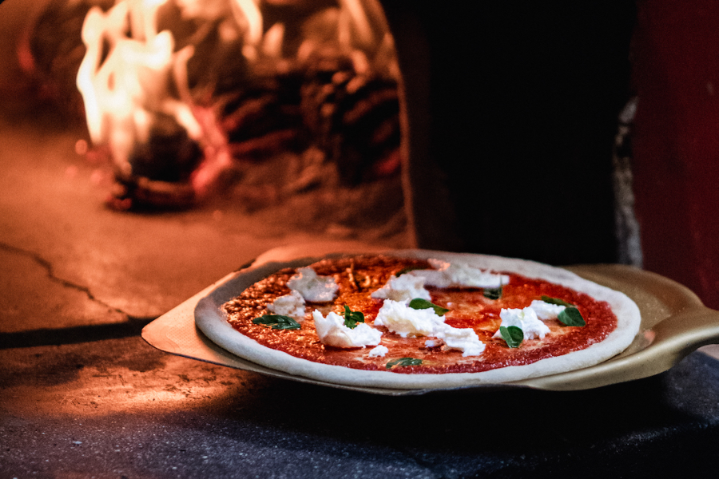

Rue Sopite, Sainte Jean de Luz
COCINA ITALIANA
Nuestro concepto es siemple: Nosotros le proponemos una cocina italiana auténtica, respetuosa del patrimonio culinario italiano.
Nuestro concepto es siemple: Nosotros le proponemos una cocina italiana auténtica, respetuosa del patrimonio culinario italiano.
La masa de la pizza se elabora de forma artesanal con prefermentaciones, levadura madre y con excepcionales harinas italianas que dejamos madurar un mínimo de 48 horas. Extendemos la masa a mano, respetando la tradición. Italia es nuestra pasión, estamos felices de compartir contigo después de cada uno de nuestros viajes y encuentros con productores, los sabores y la autenticidad de este país a través de tus platos. En el restaurante se le ofrece un rincón de “tienda de comestibles” de alta calidad con una selección de productos que utilizamos habitualmente.

Todos nuestros platos están elaborados con productos frescos de nuestra región. Solicitamos diariamente a los productores locales carne vasca de Didier Arrietta y pescado de la subasta de San Juan de Luz. Nuestros productos italianos: harinas, parmesano, mozzarella, embutidos, pastas, condimentos... son cuidadosamente seleccionados e importados de las mejores casas italianas. Rémi y su equipo renuevan la carta a lo largo de las temporadas para respetar nuestro entorno, la naturaleza y daros lo mejor de lo que nos ofrece. Miembro de la asociación de pizzerías francesas, Rémi participa regularmente en los campeonatos de pizza de Francia para compartir su amor por el arte de la pizza. Vicecampeón de la selección suroeste de 2013 en el campeonato de Francia. 3.ª selección del Suroeste de 2015 en el campeonato francés. Quinta final de pizza Due 2018 en París. Miembro del jurado del campeonato de Francia desde 2008